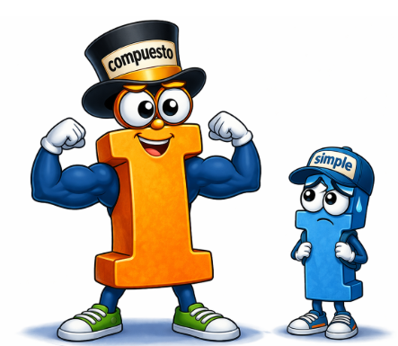

En el interés simple, la escena es distinta. La pelota también empieza a rodar, pero tú bajas esquiando detrás de ella. Cada vez que la piedra recoge nieve, tú la quitas y la echas en un cubo. La pelota sigue siendo siempre la misma pelota, y la nieve no se queda pegada.

Al final del camino tienes dos cosas separadas: la pelota por un lado (el capital inicial) y la nieve acumulada en el cubo (los intereses), pero la nieve nunca genera más nieve.
Interés simple Vs Interés compuesto

La diferencia se ve clara al final del recorrido. Si paras la bola del interés compuesto y le quitas toda la nieve, descubrirás que has acumulado mucha más que en el cubo del interés simple. No porque el tipo de interés fuera necesariamente mayor, sino porque en el interés compuesto el tiempo juega a favor de la acumulación, el principal (cantidad invertida o cantidad que te han prestado), obviamente es el mismo, no ha cambiado.
Por eso el interés compuesto es tan potente —para bien o para mal— y explica por qué, a largo plazo, pequeñas diferencias en el tipo de interés o en la forma de capitalizar acaban produciendo resultados muy distintos.

En resumen....
En el interés simple, los intereses se calculan siempre sobre el importe inicial (o sobre una base fija).
En el interés compuesto, los intereses se calculan sobre el importe inicial más los intereses que se han ido acumulando.
Dicho en lenguaje humano: si no pagas (o si se capitaliza), el interés “se queda dentro” y crece.
🎬▶️🍿
Te dejo un video resumen para que sientes los conceptos
🍿🎬 “Preparando palomitas… que este tema tiene más giros que una peli de suspense financiero” 😄